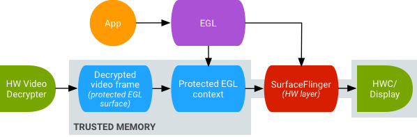

A SurfaceTexture is a combination of a surface and an OpenGL ES (GLES) texture. SurfaceTextures are used to provide surfaces that output to GLES textures.
A SurfaceTexture contains a BufferQueue for which
apps are the consumer. The onFrameAvailable() callback
notifies apps when the producer queues a new buffer. Then, apps call
updateTexImage(), which releases the previously held buffer,
acquires the new buffer from the queue, and makes EGL calls to make the
buffer available to GLES as an external texture.
An external GLES texture (GL_TEXTURE_EXTERNAL_OES) differ
from traditional GLES textures (GL_TEXTURE_2D) in the following
ways:
The main benefit of external textures is
their ability to render directly from BufferQueue data. SurfaceTexture sets the
consumer usage flags to GRALLOC_USAGE_HW_TEXTURE when it creates
BufferQueues for external textures to ensure that the data in the buffer is
recognizable by GLES.
Because SurfaceTexture interacts with an EGL context, an app can only call its methods while the EGL context that owns the texture is current on the calling thread. For more information see the SurfaceTexture class documentation.
SurfaceTexture includes the getTimeStamp() method, which
retrieves a timestamp, and getTransformMatrix() method, which
retrieves a transformation matrix. Calling updateTexImage()
sets both the timestamp and the transformation matrix. Each buffer that
BufferQueue passes includes transformation parametes and a timestamp.
Transformation parameters are useful for efficiency. In some cases, source data might be in the incorrect orientation for the consumer. Instead of rotating the data before sending it to the consumer, send the data in its orientation with a transform that corrects it. The transformation matrix can be merged with other transformations when the data is used, minimizing overhead.
The timestamp is useful for buffer sources that are time dependent. For
example, when setPreviewTexture() connects
the producer interface to the output of the camera, frames from the camera can
be used to create a video. Each frame needs to have a presentation
timestamp from when the frame was captured, not from when the app received the
frame. The camera code sets the timestamp provided with the buffer,
resulting in a more consistent series of timestamps.
Grafika's continuous capture involves recording frames
from a device's camera and displaying those frames on screen.
To record frames, create a surface with the
MediaCodec class's
createInputSurface() method and pass the surface to the camera. To
display frames, create a SurfaceView and pass the surface to
setPreviewDisplay(). However, recording frames and displaying
them at the same time is a more involved process.
The continuous capture activity displays video from the camera as video is being recorded. In this case, encoded video is written to a circular buffer in memory that can be saved to disk at any time.
This flow involves three BufferQueues:
In the figure below, the arrows indicate data propagation from the camera. BufferQueues are in color (producers are teal, consumers are green).
Figure 1. Grafika's continuous capture activity.
Encoded H.264 video goes to a circular buffer in RAM in the app process.
When a user presses the capture button, the MediaMuxer class
writes the encoded video to an MP4 file on disk.
All the BufferQueues are handled with a single EGL context in the app while the GLES operations are performed on the UI thread. The handling of encoded data (managing a circular buffer and writing it to disk) is done on a separate thread.
SurfaceView's surfaceCreated() callback creates the EGLContext
and EGLSurfaces for the display and the video encoder. When a new frame arrives,
SurfaceTexture performs four activities:
The encoder thread then pulls the encoded output from MediaCodec and stashes it in memory.
Android supports GPU post-processing of protected video content. This lets apps use the GPU for complex, nonlinear video effects (such as warps), mapping protected video content onto textures for use in general graphics scenes (for example, using GLES), and virtual reality (VR).
Figure 2. Secure texture video playback
Support is enabled using the following two extensions:
EGL_EXT_protected_content)
Enables the creation of protected GL contexts and surfaces, which can both
operate on protected content.GL_EXT_protected_textures)
Enables tagging textures as protected so they can be used as framebuffer texture
attachments.Android enables SurfaceTexture and ACodec
(libstagefright.so) to send protected content even if
the window's surface doesn't queue to SurfaceFlinger
and provide a protected video surface for use within a protected context. This
is done by setting the protected consumer bit
(GRALLOC_USAGE_PROTECTED) on surfaces created in a protected
context (verified by ACodec).
Secure texture video playback sets the foundation for strong DRM implementation in the OpenGL ES environment. Without a strong DRM implementation, such as Widevine Level 1, many content providers don't allow rendering of their high-value content in the OpenGL ES environment, preventing important VR use cases such as watching DRM-protected content in VR.
AOSP includes framework code for secure texture video playback. Driver
support is up to OEMs. Device implementers must implement
EGL_EXT_protected_content and
GL_EXT_protected_textures extensions. When using your own codec
library (to replace libstagefright), note the changes in
/frameworks/av/media/libstagefright/SurfaceUtils.cpp that allow
buffers marked with GRALLOC_USAGE_PROTECTED to be sent to
ANativeWindows (even if ANativeWindow doesn't queue directly to the window
composer) as long as the consumer usage bits contain
GRALLOC_USAGE_PROTECTED. For detailed documentation on implementing
the extensions, refer to the Khronos registries
(EGL_EXT_protected_content,
and
GL_EXT_protected_textures).